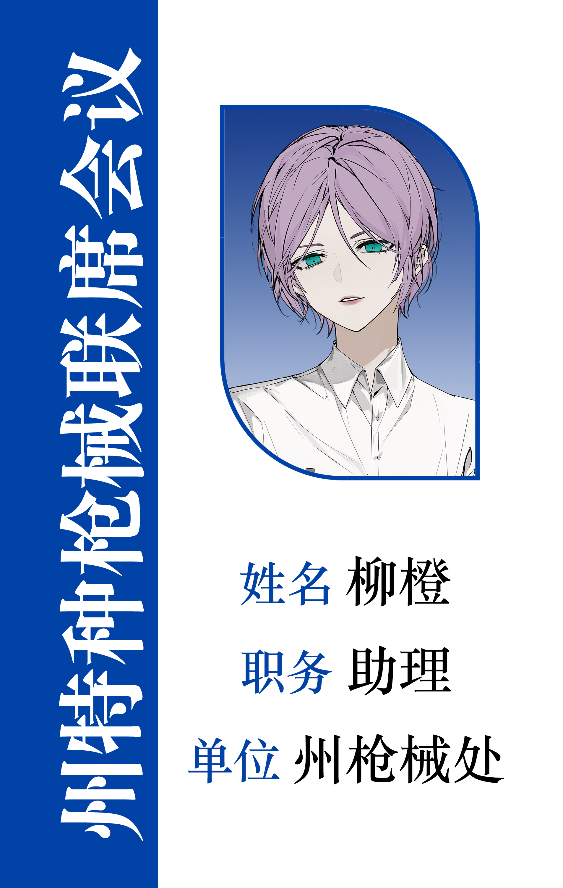

好结局 End2
事情从哪里开始说好呢？所有时间线交织回一个原点，1999年，还是从此谈起吧。
千禧年的科技浪潮催生了无数个中小企业，润泽公司借助数码产品迅速占领市场，流水线工人昼夜不分地在传送带上工作，一个个金属和塑料零件被拼装成可以交互的电子商品，又流入市场最终走入千家万户。当时的创始人数着钞票，站在楼顶畅想自己的商业帝国，仿佛看见远处正翻涌出金钱洪流。
年复一年，日复一日，所有人都以为这样的生活会永远继续下去，但2015年，有关部门的一次水质检测打破了泡沫似的美好幻想，深埋地底的工业污水渗透而出，浸染了周围的土地，瞬间将公司推入蔚海市的风口浪尖。创始人站在镜头前，对着蜂拥而至的记者，一个字都说不出来。他无法为公司辩解些什么，只得掏钱打发走了那些人。封口费、污水处理费、水质检验费，渐渐拖住了本就发展疲软的润泽公司的前进之路。
2018年集团宣布转型，但究竟为什么转又要转向何方，知情人只有寥寥几个。但那日以后，员工们得到了崭新的工牌，上面的公司名称更换成“润泽集团”，logo是一枚散射光线的太阳，没人知道这意味着什么。
2020年，润泽集团和南湾一中签订了第一年合作协议，其中包括在学校开展“启明星大赛”，从多维度多标准评估参赛者的能力，优胜者可以于高考后进入“云江计划”实习。这些相信你已了解，但我还是想不厌其烦地再做一次回顾，因为这些和接下来发生的事密切相关。
如果你想不起“刘晓葭”这个名字，可以去官网首页看看，他是现今南湾一中的副校长，当然，2020年他还只是一名普通的化学老师，过着每天两点一线的生活。而他的妹妹刘晓荷，当时是高三（8）班的班长。她们的父母走得早，家里除了刘晓葭当老师的薪酬便没有了其他收入来源，彼时正值第一届”启明星大赛“开赛，所有任课教师一致推荐她报名。
“同学，可以进来了。”她站起身走入门内，面前坐着一排评委，他们的眼神被敛藏在玻璃后，令刘晓荷有些不自在。沉默了许久都无人开口，最后她勉强挤出几个字开始介绍自己。回学校后，那种被无数只眼睛凝视的感受仍令她如坐针毡，她只能宽慰自己，这一切都是为了实习和最终的offer。
高考后她如愿被被云江计划招募，坐上班车离开了南湾一中，临走前，刘晓葭看着她许久，最后却什么都没说。
第一年，妹妹还总是和自己在手机上聊天，但聊起项目，她总憧憬万分。刘晓葭的话很少，每次都是寥寥数语，但她习惯了哥哥的行为模式，也还是常常和对方打电话。
第二年，似乎有什么变了，她总是定时在每周二晚上八点打来电话，黑眼圈一周比一周深，精神也没有以前好，再后来，聊天的频率越来越低，“哥，我很好。”
刘晓葭终于意识到不对，他披上衣服下楼，凭着脑海中的相关记忆开车往园区冲。
“我妹妹在你们这里，对不对！”他几乎在咆哮，但脑中空空如也，环顾四周，所有人都在玻璃后冷眼看着，仿佛他是一个不理智的疯子。他无从得知自己的妹妹在这里遭遇了什么，但他们的确正被同样的人逼疯。同样的会议室，同样的沉默，同样的……妥协。
“到底要我做什么你们才能放过她。”刘晓葭无力地从墙角滑落，口中喃喃自语。
那些人说自己没有不让她走。说这里没有人逼他，“先生，我们可什么都没有说呀？”
他的头痛又犯了，就算闭上眼也痛得可怕，好像脑中有千百把三角尺在戳刺。
“……我答应你们。”
刘晓葭在混沌中签下了名字，勉强瞄到了最后一行字，“本人刘晓葭，自愿加入南湾一中‘启明星大赛’组委会，为集团输送优秀人才。”
再后来，一切都变了。赛季一到，门口便总被学生和家长挤得水泄不通，有人怯生生地敲门进来。“刘老师，赢得名次真的就可以得到稳定的工作吗？”
他说，会的，而且你妈妈爸爸当然会为你骄傲。
”可是老师，我……她们走的早……。”
刘晓葭眼中闪出怜悯之色，他弯下腰，对上她的眼神，“那你更应该好好把握机会，不是吗？她们在天之灵也会看到你的进步和成功的，去吧。”
袁汐在被刘晓荷告知信息的那天晚上，她又想起了这些，盯着对方那真诚愤怒的眼神，她无论如何都无法把这件事和盘托出。
她们非常亲近，刘晓荷甚至会在袁汐睡不着时低声给她讲故事，“还在上学的时候，我和朋友经常在下晚自习后躺在湖边的长椅上一起看星星。顺着北斗七星斗柄就能看到北极星；古人根据北斗七星的指向确定春生夏长，秋收冬藏，而我们和她们共享同一片苍穹和同一轮月亮。”
再后来，刘晓荷突然被接走。打开门，外面空空荡荡，只有刘晓葭一个人站在那里，“来带你回家。”
对他单枪匹马来救自己走的疑惑并未冲淡刘晓荷的兴奋，在车上，她便开始追问细节，“哥，你太厉害了！怎么做到的？”
身边是妹妹的叽叽喳喳，刘晓葭一顿，在路口重重踩下刹车， 身体向前倾倒又被安全带勒回原位，令他重重咳嗽了一声，“先回家，等一下带你去医院。”
医院内，市医院的心理医生顾遥洲盯着对方的心理量表，眉头拧在一道，沉默了许久最后吐出一句，“给你开了舍曲林、劳拉西泮和普萘洛尔，先半个月的量，定时来复诊。”
后来她再也没等到她的患者，再得到消息是她离职后。记忆里鲜活的女孩已经化作案件通报上那短短的几个字。
“哥，你和我说实话，你怎么把我救出来的？”刘晓荷本想开玩笑，但看到哥哥的沉默，她脑中有什么东西嗡鸣，从涟漪扩大成洪水向自己扑过来。
“哥，你和我说实话。你怎么把我救出来的。”她站在刘晓葭面前，直视着他低垂的眼睛，指甲深深掐入掌心。
他说自己没有选择。他为了救她出来只能这么做。他不是故意想把学生送到那种地方的。他有苦衷。
她放声大笑，眼泪却啪嗒啪嗒往下掉。
她说明明你有的选。她宁愿他没有救过自己出来。她在最难的时候都没想过牺牲过别人。她怒吼道，“滚！从这里滚出去！”
世界从黄昏走入苍茫，门终于打开，刘晓荷走出，撇过头不去看他。刘晓葭急忙检查她的双手，见没有伤痕才终于放心。
“还记得我考上一中那天吗？你请我吃了一顿海鲜自助，今天，能再和我吃一次吗？”
他连忙应下，说你不怪哥哥就好，吃，现在就吃。
两人站在扶梯上，刘晓葭往下看，他在看妹妹；刘晓荷往上看，餐厅的蓝色巨幅海报正挂在空中，随风微微飘荡。
是时候了。她随便扯了个借口说要去卫生间，便从三楼的安全通道往楼顶走，途中还差点被楼梯绊倒。她想过很多次死亡，惧怕、无力，但这次脑中却清醒得可怕。她几乎要冷笑了。
刘晓荷用力拽开通往天台的铁门，随后毫不犹豫地踏过台阶，向前坠去。
冷风扬起了她的裙角，吹干了她情不自禁的泪痕。
袁汐也没能等到刘晓荷。某日入夜，她再次躲过看守人员的监视，准备用私藏的手机记下信息，窗外冷不丁劈下闪电，惊得她手中的笔险些掉落。但随即，她听到了别的声音正由远及近，伴着雷声，让周遭的一切和时间被拉得很长很长。
“柳橙，我明白你很焦虑，但请待在车里，有任何情况用手机沟通。”魏舒桐一脚刹车将车停稳，几个人跳下来，身后是借调的战术小队。“准备。”陆黎轻声道，伸出两根手指比划了一下，而后再次紧了紧身上的防弹衣。
陆黎带领一支小队破门，她掏出一枚小巧的技术设备贴在密码锁上，“咔哒”一声，铁门缓缓打开，几人迅速钻入门内，向右侧奔去，“在那边，我们走，”雨水打湿了她的刘海，紧紧贴在脸侧。
雨越下越大，仿佛要把整个世界的罪恶全部冲刷殆尽。魏舒桐踏过水坑，在232-WJ楼的墙角站定，她掏出手枪，重重扣下扳机，随后递了个眼神，几人迅速绕入一层。
有人惊慌失措地叫起来，随后报警按钮被按下，魏舒桐口袋里的通讯器重重响起，“别按了，我们就是警察！放下武器蹲在地上！”随后，察觉到身后的声音，她迅速转身，攥住对方手腕一拧，一柄警用电击器掉在地上。她挑起眉毛，“哟，一个科技园区还得有这种东西？全部带走！”
所有门都被撞开，袁汐捧着手机愣愣站在一边，魏舒桐在她面前打了个响指，“别站着了，走，有什么话去警局说。”
【蔚海警局联合专项执法行动通报】
蔚海警局联合专项执法队伍，针对江流科技园区开展大规模专项行动，严防非法拘禁等犯罪行为死灰复燃，目前工作已迎来关键阶段性进展。
行动中，蔚海警局局长魏舒桐、副局长陆黎亲自带领借调的武警小队突入，对试图袭警的员工实施抓捕并彻查所有楼层房间。在园区清查过程中，现场查获电脑、硬盘、大量员工资料等，所有信息均已在蔚海警局备份。
目前最新进展为，云江计划员工均已被批捕，涉案的南湾一中副校长刘某葭、教师陈薇、员工辛沐也已被抓捕归案，将由法律得到应有的制裁。园区内所有受害者均已被救出。蔚海警局心理顾问顾遥洲对受害者进行了心理评估和专项心理筛查，并依托蔚海二院的心理治疗项目，力图以多种技术处理受害者创伤。
润泽集团称，云江计划为其部分员工所为，集团反对以牺牲个体换取利益的行为；同时，集团愿意为受害者承担一切治疗费和精神补偿费，并将继续承担社会责任，共促美好蔚海建设。
蔚海警局重申，打击违法犯罪没有终点，本市将持续保持高压整治力度，维护蔚海市社会治安稳定，履行区域治理的重大责任。
警局里，陆黎对你眨眨眼，“我这里有一份工作，要不要来？我在州枪械处还差一个助理哦。”
你的心怦怦直跳，但还是强装镇定地问对方为什么是自己，明明你并不是最出色的。
她大笑起来，拍上你的肩膀。“你仅仅通过电脑便掌握了绝大多数线索，并把朋友从水深火热中解救了出来，在这一点上你非常出色，不要妄自菲薄。”
你呆呆地笑起来，又情不自禁地流下了眼泪。为了掩饰自己的窘迫，你只好扭过头，却正撞上正在接受检查的沈伏的眼神。
她望着你，让你想起过去每一个和她一起度过的夜晚。你又想哭了，但还好，你们还有明天。

后记
如你所见，这是一个关于爱、勇气与拯救的故事。
故事的开始，玩家角色柳橙发现好友沈伏在高考后失踪，于是登陆一中官网寻找线索。在探索过程中，我们共同结识了魏舒桐、顾遥洲、袁汐、刘晓荷等一个个鲜活的角色，并最终在网页间拼凑出事情的真相。
曾经有好友说过，我的作品总带有一种不忍。因为这种不忍，本该牺牲的人存活，本该悲痛的人幸福。这种追求也贯穿于我的整个创作过程之中，我不想为了 be 而 be，但也不想为了大团圆而强行挽留无法留住的角色，那种平衡是遗憾而迷人的。
处理云江计划和结尾关于刘晓荷的部分时，写着写着就会忍不住哽咽。我们都记住了你，我们都在等你，但，究竟要怎么释怀呢，小荷。
个人对刘晓葭的解读是，其实无论什么时候他都有的选，但无母无父的风雨飘摇局面让他的不安感拉得特别高，因此毕业后便草草签协议去一中当老师；他冲进园区也并不纯粹是出于对妹妹的爱，甚至可以说是完全出于对安全感的渴求。启明星大赛的负责人选其实有很多个备选方案，但他直撞在枪口，偏偏还不用软磨硬泡就能接受很多不正常的条件和计划。包括到后面，他将袁汐这些和自己身世相似的小孩子毫不愧疚地骗进比赛，也正是知道对方面对集团开出的高昂违约金和行业内封杀威胁无法反抗。最初他也反抗过，但对方手里捏着他亲口答应的录音，威逼利诱之下，他逐渐麻木，面对心碎的家长甚至连“我也很抱歉”都说不出。
他爱妹妹吗？或许吧。但为了那种虚无缥缈的安定，他的懦弱亲手葬送了自己和自己的一切。
如果你想了解柳橙的一切，她生命中最重要的一天是2020年9月2日，你知道在哪能找到她。
补充一下游戏中关于名字的小巧思，地点和非我 oc 的人名都与水有关，或许有人会猜到？
以及，如果你遭遇威胁、霸凌等自身无法处理的事情，请尽可能告诉你认为可以信任的老师、医生或直接报警，愿正义与你同在。
制作人员
托举蓝汐（围巾猫）
（本游戏中使用 ai 的部分为 95% 的代码写作和 14/31 页面的病例写作，除此之外都为手搓或者基于相关新闻换头。）
官网首页搜围巾猫和舟舟有惊喜哦！
鸣谢名单
舟舟、柿子、星星扶、xixi、菩萨/平安鸽、安子芥、橼韶、秋秋、陆希音、围巾猫的外公外婆和爸爸妈妈、雪临、问题不大、音夜、梅香咸鱼了、远上寒川、邦尼、双马尾大佬、无言月、Z、阿泽、Ringle、应许、我不吃了还不行吗、Yuu22
3/31 与 2/End 界面的捏人作者为 @千临临
11/31 界面好书推荐的排版网站为 blokko，作者为 @四十七-
ps：非常欢迎大家进行本游戏相关同人创作，可以打tag#南湾一中找到我#，或发送至图中小红书号私信，我都会看～